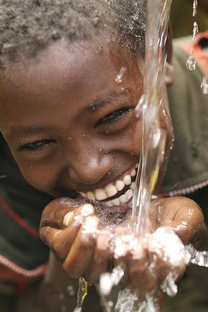
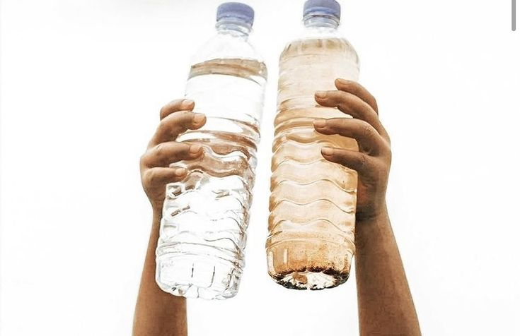
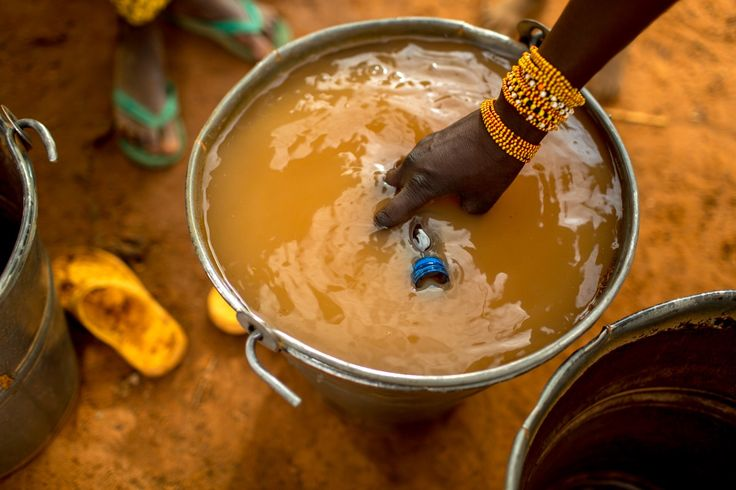
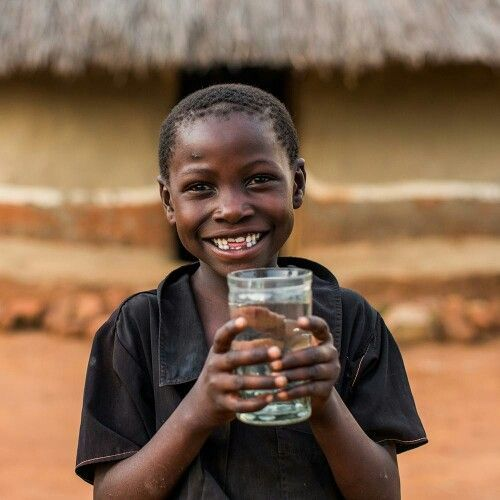

Drinking from the Source
Sub-Saharan Africa

The Joy of Clean Water
What access changes everything

Shared Hands, Shared Source
Community dependence on one pipe

No Choice at All
Dirty vs clean — the daily reality

Filling What They Have
When a trickle is a luxury

Relief
What a glass of clean water means